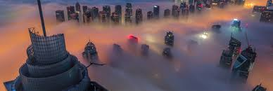
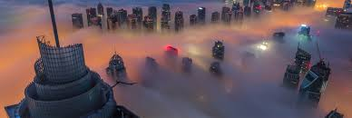

Dubai city
Dubaï, rarement DoubaïNote 1 (en arabe : دبي / Dubayy, /dʊ.ˈbajj/) est la première ville des Émirats arabes unis (devant la capitale fédérale Abou Dabi). Située sur le golfe Persique, elle est capitale de l'émirat de Dubaï, et compte plus de trois millions d'habitants. Elle forme, avec les villes de Charjah, Ajman et Oumm al Qaïwaïn, elles-mêmes capitales de leurs émirats respectifs, une agglomération qui dépasse 3,1 millions d'habitants en 2018. Dubaï est également le premier port du pays.


 

Quoique n'étant pas la capitale des Émirats arabes unis, Dubaï est devenue la ville la plus connue de la fédération. Cette renommée est due notamment à la médiatisation de ses projets touristiques comme l'hôtel Burj-al-Arab, le plus luxueux hôtel de Dubaï, au gigantisme de ses projets immobiliers comme les Palm Islands, presqu'île et archipel artificiels en forme de palmier, The World, archipel artificiel qui reproduit la carte du monde, la Dubaï Marina à l'architecture particulière et gigantesque, sans oublier l'immeuble le plus haut du monde, la Burj Khalifa.